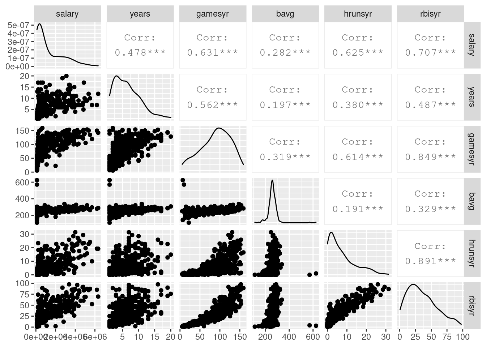

library(tidyverse)
library(tidymodels)
library(wooldridge)
library(GGally)
data("mlb1")
df <- mlb1
df %>%
select(salary, years, gamesyr, bavg, hrunsyr, rbisyr) %>%
ggpairs()
mod.lm <- linear_reg() %>%
set_engine("lm")
fit.lm.f <- fit(mod.lm,
log(salary) ~ years + gamesyr + bavg + hrunsyr + rbisyr,
data = df)
fit.lm.r <- fit(mod.lm,
log(salary) ~ years + gamesyr,
data = df)
tidy(fit.lm.f)## # A tibble: 6 x 5
## term estimate std.error statistic p.value
## <chr> <dbl> <dbl> <dbl> <dbl>
## 1 (Intercept) 11.2 0.289 38.8 4.19e-128
## 2 years 0.0689 0.0121 5.68 2.79e- 8
## 3 gamesyr 0.0126 0.00265 4.74 3.09e- 6
## 4 bavg 0.000979 0.00110 0.887 3.76e- 1
## 5 hrunsyr 0.0144 0.0161 0.899 3.69e- 1
## 6 rbisyr 0.0108 0.00717 1.50 1.34e- 1glance(fit.lm.f)## # A tibble: 1 x 12
## r.squared adj.r.squared sigma statistic p.value df logLik AIC BIC
## <dbl> <dbl> <dbl> <dbl> <dbl> <dbl> <dbl> <dbl> <dbl>
## 1 0.628 0.622 0.727 117. 2.94e-72 5 -385. 784. 811.
## # … with 3 more variables: deviance <dbl>, df.residual <int>, nobs <int>anova(fit.lm.f$fit, fit.lm.r$fit)## Analysis of Variance Table
##
## Model 1: log(salary) ~ years + gamesyr + bavg + hrunsyr + rbisyr
## Model 2: log(salary) ~ years + gamesyr
## Res.Df RSS Df Sum of Sq F Pr(>F)
## 1 347 183.19
## 2 350 198.31 -3 -15.125 9.5503 4.474e-06 ***
## ---
## Signif. codes: 0 '***' 0.001 '**' 0.01 '*' 0.05 '.' 0.1 ' ' 1Lasso
set.seed(952)
data_split <- df %>%
select(salary, years, gamesyr, bavg, hrunsyr, rbisyr) %>%
initial_split()
data_tr <- training(data_split)
data_te <- testing(data_split)
rec <- recipe(salary ~ ., data = df)
mod.0 <- linear_reg() %>%
set_engine("lm")
wf <- workflow() %>%
add_model(mod.0) %>%
# add_recipe(rec) %>%
add_formula(log(salary) ~ years + gamesyr + bavg + hrunsyr + rbisyr)
wf## ══ Workflow ════════════════════════════════════════════════════════════════════
## Preprocessor: Formula
## Model: linear_reg()
##
## ── Preprocessor ────────────────────────────────────────────────────────────────
## log(salary) ~ years + gamesyr + bavg + hrunsyr + rbisyr
##
## ── Model ───────────────────────────────────────────────────────────────────────
## Linear Regression Model Specification (regression)
##
## Computational engine: lmwf %>%
fit(data = data_tr)## ══ Workflow [trained] ══════════════════════════════════════════════════════════
## Preprocessor: Formula
## Model: linear_reg()
##
## ── Preprocessor ────────────────────────────────────────────────────────────────
## log(salary) ~ years + gamesyr + bavg + hrunsyr + rbisyr
##
## ── Model ───────────────────────────────────────────────────────────────────────
##
## Call:
## stats::lm(formula = ..y ~ ., data = data)
##
## Coefficients:
## (Intercept) years gamesyr bavg hrunsyr rbisyr
## 11.042275 0.068093 0.011920 0.001619 0.010237 0.012851